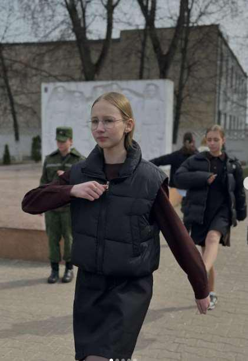
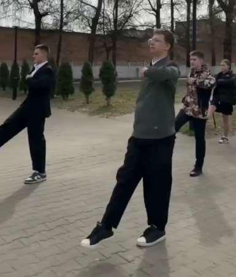

ПОДГОТОВКА К РАЙОННОМУ ЭТАПУ РЕСПУБЛИКАНСКОЙ АКЦИИ «ВАХТА ПАМЯТИ – 2026»
В рамках подготовки к районному этапу республиканской акции «Вахта Памяти – 2026» 3 апреля в сквере у Вечного огня прошли учебно-тренировочные занятия, в которых приняли участие воспитанники военно-патриотического клуба «Юнармеец» нашей гимназии.


Акция направлена на развитие патриотизма у детей и молодежи через их участие в социально значимой деятельности: поисковой, исследовательской и мемориальной, призванной увековечить подвиги защитников Родины и память о жертвах войн.
Занятия были организованы совместно
с кадетским училищем, что позволило нашим
ребятам:
отработать строевую подготовку
и ритуальные элементы;
закрепить знания о протоколе памятных мероприятий;
продемонстрировать высокий уровень готовности к районному
этапу!